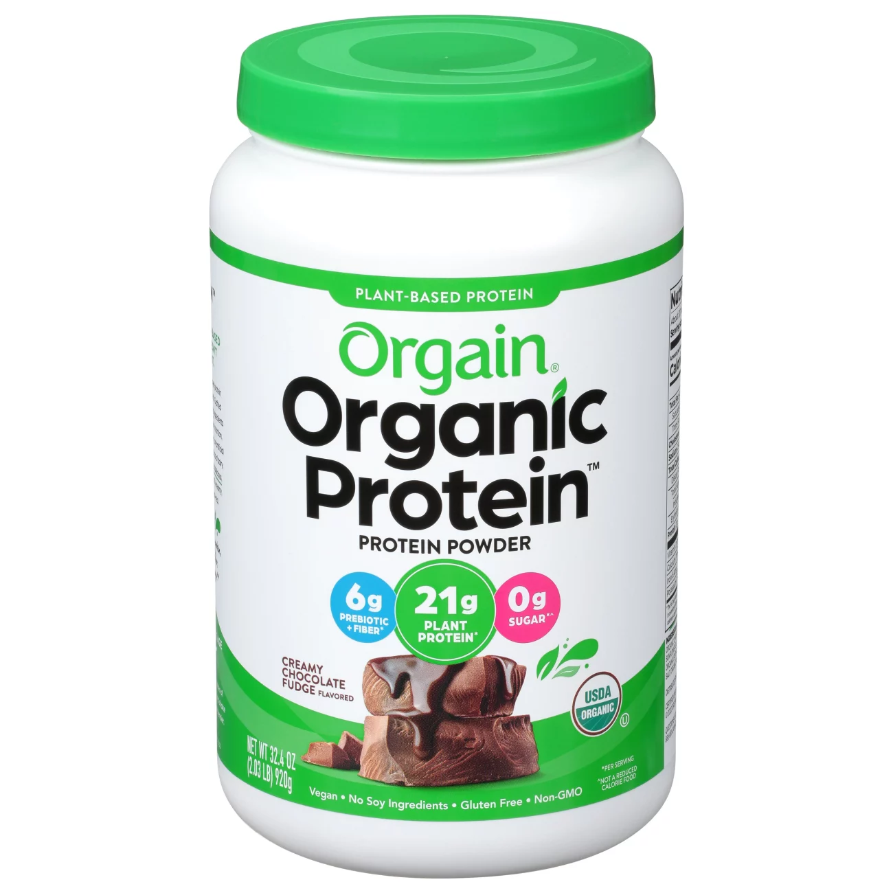

Isolate Protein: Is the best and most expensive kind of protein, it is taken from Whey protein and laced with enzynes that help the speed of protein breakdown in the stomach so you get more protein in your system quicker after a workout to maximize your gains!
Whey Protein: Most basic and cheapest form of protein, it is whey protein which is taken from pure milk with not added preseritives, you can get about 30 grams per hour so this protein is good to take multiple times a day.
Organic Protein: Our organic protein is taken from plant extract and peanuts for a great source of fully vegtarian protein powder that can be digested in 20 grams per hour
Our list of suppliments include, Melationing for sleep aid, vitamins for bodly aid, and pre workouts to maximze your workouts. For more information click on to our contact us page for more imformation on buying or basic inforamtion regarding our suppliments.
Meal plans are increably important to your post owkrout recovery and building mucsle. Most of your protein should come from your meals outside of your protein shakes. Our meal plans will allow you to find the best foods for your desired calory in take. For access to our mailed meal plans contact us through our email service!